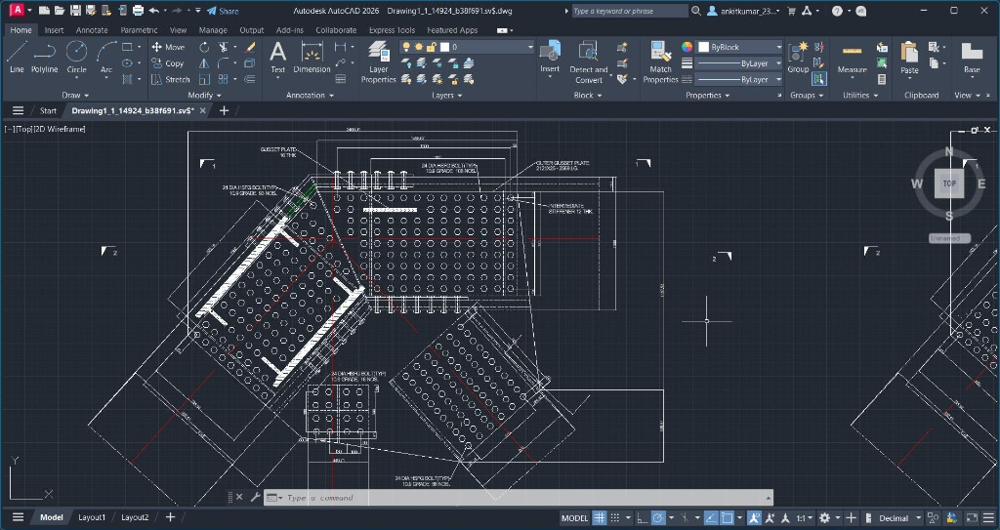
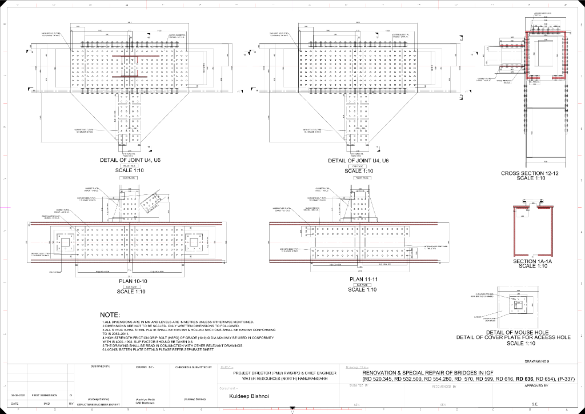

The Engineering Context
A structural consulting firm was contracted to rehabilitate an aging steel truss bridge. Due to tight municipal deadlines, they required an urgent engineering drafting team to translate structural calculations and hand-annotated sketch notes into 17 fabrication-ready AutoCAD (DWG) sheets:
- Zero Tolerance on Bolt Pitch & Edge Distances: All connection nodes had to adhere strictly to IS 800:2007 specifications for bolt pitch, gauge distance, and minimum edge distance to prevent tearing or shear failure.
- Complex Node Geometry: Diagonal tension members, vertical compression posts, and bottom chord girders converged onto irregular polygonal gusset plates.
- Strict 8-Day Deadline: All 17 sheets, including cross-sections, elevations, weld symbols, and bill of materials, had to be produced and verified in 8 calendar days.
The Ribhus Technical Approach
The Ribhus structural engineering team mobilized immediate detailing workflows:
- Mathematical Coordinate Geometry: Pre-calculated intersection angles and centerline offsets using trigonometry before drafting.
- Standardized AutoCAD Layer Hierarchy: Enforced strict lineweight hierarchies (heavy outlines, centerlines, hidden weld lines, and dimension text styles).
- IS 800:2007 Verification: Checked every single bolt hole diameter (d₀ = d + 2 mm) and edge distance (e ≥ 1.5 d₀) against the code.
- Iterative Daily Client Submissions: Sent 2 to 3 completed sheets daily for consulting engineer review, ensuring zero rework on final milestone day.
Fabrication Sheet Showcase
Excerpts from the delivered 17-sheet drawing package:
 Gusset Plate Node Elevation & Bolt Layout
Gusset Plate Node Elevation & Bolt Layout

Diagonal Member & Girder Bolted Interface
Plate Splicing, Stiffeners & Section CutsStructural Engineering Code Compliance Protocol
Structural detailing is a life-safety task. On a bridge connection, edge distances and bolt hole spacing must adhere strictly to design codes to prevent plate failure. Every drawing delivered by Ribhus undergoes strict formula checks and dual engineering sign-offs.